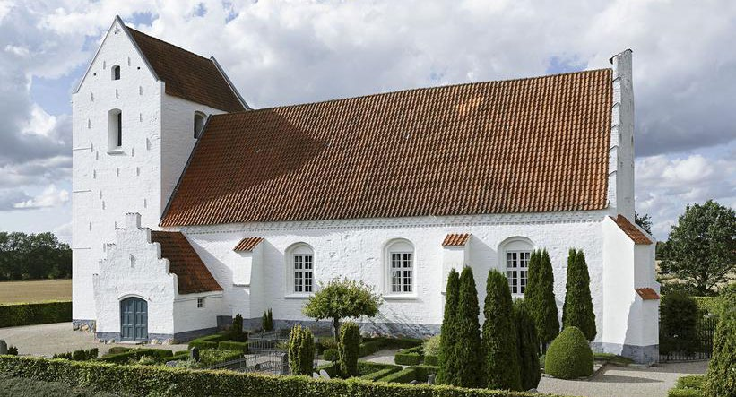
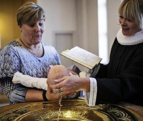
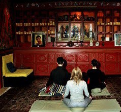
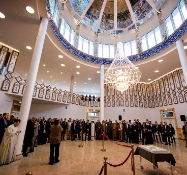

6.9 – KIRKE OG RELIGION I DANMARK
sidde 215
I Danmark
Der er religionsfrihed i Danmark. Den sikrer, at borgerne har ret til at forene sig i trossamfund for at dyrke deres tro på den måde, de ønsker. Religionsfriheden blev indskrevet i grundloven i 1849 som en af de grundlæggende frihedsrettig heder i det nye demokrati.
Religionsfriheden indebærer, at den enkelte borger kan dyrke den religion, han eller hun ønsker. Alle kan også frit skifte religion. Man kan også vælge ikke at være troende. Alle borgere i Danmark har de samme borgerlige og politiske rettigheder, uanset om de har den ene, den anden eller slet ingen religiøs tro. Danmarks monark (kongen) er som den eneste person ikke omfattet af reli gionsfriheden. Grundloven fastslår, at monarken skal tilhøre den evangelisklutherske (protestantiske) kirke.
Den evangelisk-lutherske kirke er den danske folkekirke og understøttes af staten. Det er slået fast i grundloven. Staten yder tilskud til folkekirken. Medlem merne af folkekirken betaler en særlig kirkeskat. Kirkeskatten er en slags medlemskontingent til folkekirken. Det er derfor kun medlemmer af folkekirken, som skal betale kirkeskat.
Den danske folkekirke og kristendommen har sat sig mange spor i det danske samfund. Over alt i landet står kirker som tydelige symboler på kristendommens lange historie i Danmark. Kristendommen har været med til at påvirke udvik lingen af det danske samfund. Kirkelige fest- og helligdage markeres fortsat i løbet af året. Og den danske folkekirke varetager på statens vegne en række opgaver, for eksempel at registrere fødsler, navngivning og dødsfald. Det har kirken gjort i flere hundrede år. Bellinge kirke på Fyn. Foto: Nationa
Bellinge kirke på Fyn. Foto: Nationalmuseet.
Læremateriale Til Indfødsretsprøven

sidde 216
Det er et af den danske folkekirkes kendetegn, at ingen kan udtale sig på kirkens vegne. Folkekirken har ingen officiel talsmand. Den deltager heller ikke som folkekirke i den politiske debat. De fleste danskere betragter religion som en privatsag. Der er tradition for at skelne mellem religion og politik. Den danske folkekirke fremhæves ofte for at være en bred og rummelig kirke. Det vil sige, at den giver plads til betydelige forskelle i opfattelsen af den evangelisk-lutherske kristendom.
Størstedelen af den danske befolkning (cirka 70 procent i 2026) er medlem af folkekirken. Der er dog store geografiske forskelle. I Københavns Kommune er 46 procent af befolkningen medlem, mens det i tyndt befolkede områder typisk er langt flere (for eksempel 84 procent i Jammerbugt Kommune i Nordjylland). Medlemskabet er frivilligt. Et medlem af folkekirken kan således frit melde sig ud, hvis vedkommende ønsker det. Det er meget forskelligt, hvor ofte medlem merne kommer i kirken til gudstjenester eller ved andre lejligheder.
Folkekirkens organisation er ligesom alle andre offentlige institutioner demokratisk og bygger på medlem mernes deltagelse. Fra gammel tid bruger man ordet ”sogn” som navn for det geografiske område, hvor den lokale kirkes medlemmer bor. Et kirkesogn ledes af et menighedsråd. Det består af sognets præster samt af medlemmer, der vælges demokratisk af menigheden.Barnedåb i dansk kirke.
Barnedåb i dansk kirke.
Den øverste administrative myndighed i folkekirken er kirkeministeren. Længe før der blev indført religionsfrihed, havde kongen givet særlig tilladelse til, at jøder samt romersk-katolske og reformerte kristne kunne udøve deres tro i Danmark. Siden grundloven blev indført, har borgerne brugt religionsfriheden til at danne mange forskellige menigheder eller trossamfund. Nogle bygger ligesom folkekirken på den evangelisk-lutherske forståelse af kristendommen. De ønsker blot at stå frit og selvstændigt i forhold til folkekirken. Andre bygger på nogle af de mange andre forståelser af kristendommen, som findes rundt om i verden. Der findes endvidere også menigheder eller trossamfund i Danmark inden for de fleste andre religioner, der er mest udbredt i verden.
En gruppe borgere kan frit danne en menighed eller et trossamfund. Det skal ikke registreres eller anerkendes af nogen offentlig myndighed. Der står dog i grundloven, at det er en betingelse, at ”intet læres eller foretages, som strider mod sædeligheden eller den offentlige orden”. Det betyder, at man også ved reli gionsdyrkelse skal respektere de øvrige regler, der gælder i samfundet.
Læremateriale Til Indfødsretsprøven

sidde 217
Trossamfund eller menigheder kan selv ansætte religiøse forkyndere, det vil sige præster, imamer, rabbinere og så videre. De kan også bygge eller indrette huse til at udøve deres religion – for eksempel kirker, templer, synagoger eller moskeer. Blot skal man ligesom ved alt andet byggeri have tilladelse fra kommunen. Den skal sikre, at byggeriet kan ske inden for de rammer, som er fastlagt i lokalplaner med videre. Menigheder eller trossamfund kan også oprette skoler. De kan få lov til at anlægge begravelsespladser. Og de kan naturligvis som alle andre benytte sig af ytringsfriheden – eksempelvis til at udgive religiøse skrifter.
Et religiøst fællesskab, hvis formål er at samles om en tro på magter (for eksempel en gud), som står over mennesker og naturlove, kan søge om at blive anerkendt som trossamfund eller som menighed. En sådan anerkendelse giver mulighed for en række særlige rettigheder. På det religiøse område drejer det sig især om, at menighedens præst (eller anden religiøs leder) kan få lov til at foretage vielse.
I 2026 er der i alt 435 anerkendte trossamfund og menigheder i Danmark. Ud over kristne er det blandt andre muslimske, jødiske, buddhistiske og hindu istiske. Anerkendte trossamfund og menigheder får ikke direkte økonomisk støtte fra staten. Skattereglerne giver imidlertid forskellige muligheder for, at de kan få en indirekte støtte. Den næststørste trosretning i Danmark i dag er islam, som omfatter en række forskellige trossamfund. Det er kun medlemskab af folkekirken, myndighederne registrerer. Derfor findes der ingen officiel statistik over, hvor mange borgere der hører til de forskellige andre religioner, menig heder eller trossamfund i Danmark.Buddhistisk tempel.
Buddhistisk tempel.Moske i Danmark. Moske i Danmark.
Læremateriale Til Indfødsretsprøven


Fonte: Læremateriale til Indfødsretsprøven, SIRI.